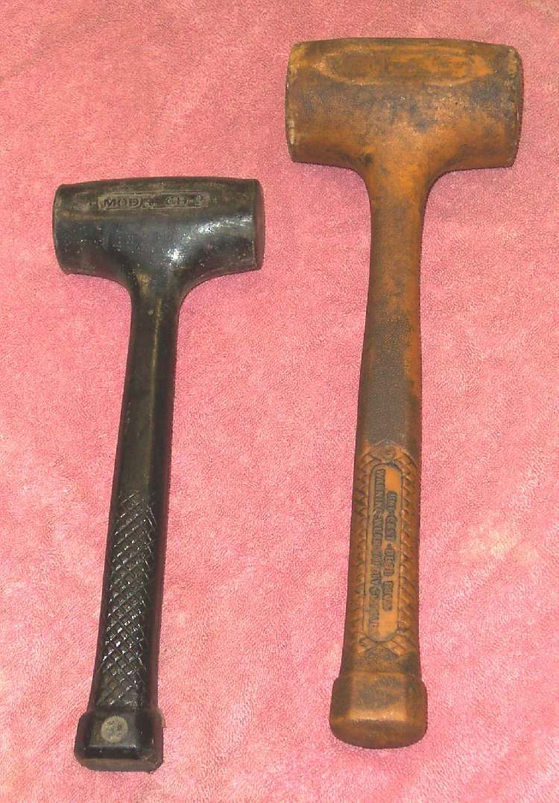
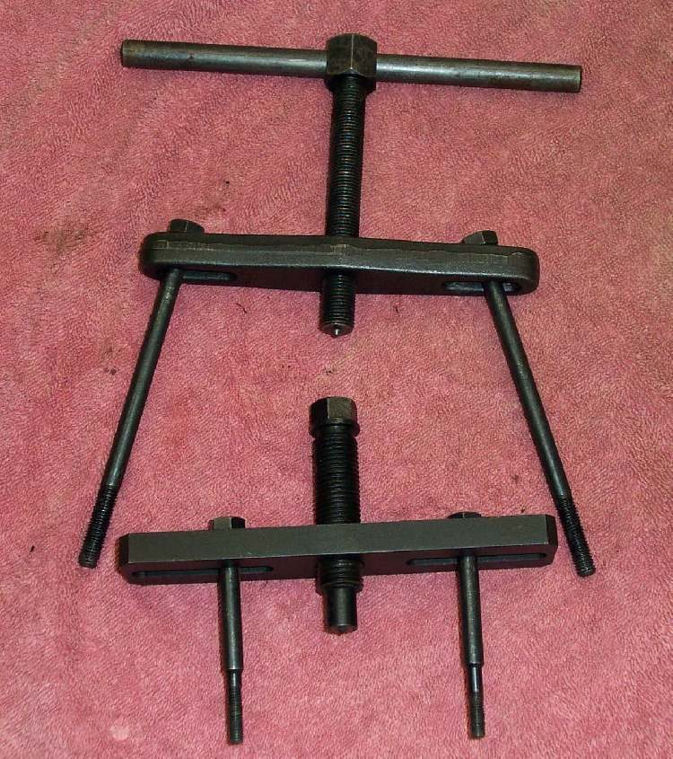
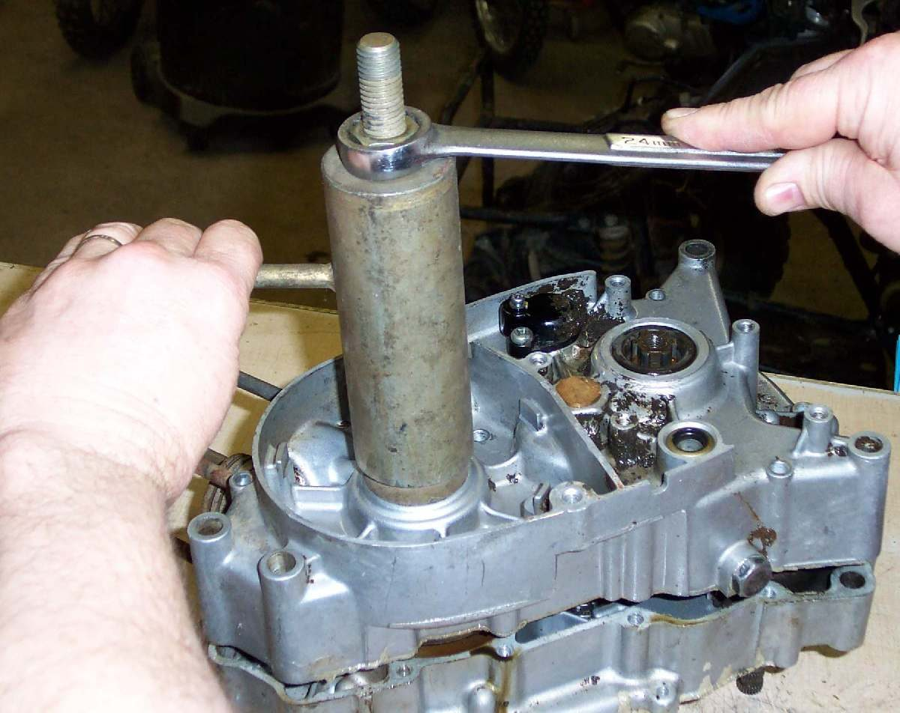
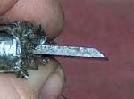
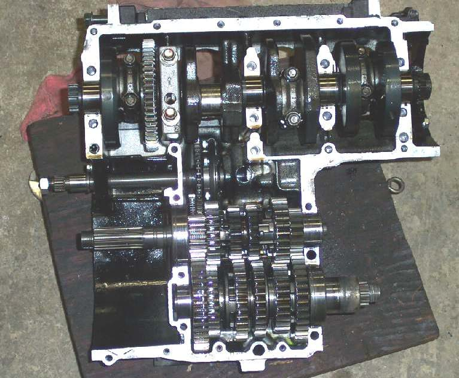

The crankshaft and gearbox shafts sit inside the crankcase. To reach them, the case halves must come apart. This can be easy or hard, and a careless hit or pry cracks the aluminium. This page explains how the job goes and what to avoid, so that you can judge whether to do it or to hand it to a workshop.
Safety
- The engine must be out of the frame, drained of oil and cool.
- Support the engine on a bench. Do not let it tip while you pull or tap.
- Case halves are aluminium. Steel tools mark them easily. A damaged joint face leaks oil.
- Wear gloves when handling heated parts. Follow the manual if it calls for heating a case.
- Use the workshop route if the engine is stuck or has a broken part: Assess bottom end and internal engine damage.
Which way does your engine split?
- Vertical split (left and right halves): common on single-cylinder two-strokes and some four-stroke singles. The cylinder and head come off first. The crankshaft is usually a tight fit in its main bearing, so a special tool is needed to push it out.
- Horizontal split (upper and lower halves): common on multi-cylinder engines. The head and cylinders can stay on if the top end is not being rebuilt.
Check the manual for the split type, the order of bolts and the tools.
You need
- The manual, with the bolt order and any tightening values.
- A dead blow hammer. A plain steel hammer works if used lightly.
- A crankshaft separating tool or puller made for your engine.
- A thin, wide wedge with a bevelled edge for stuck cases.
- Sealant or gasket as the manual states, and new crankshaft seals.
Steps
- Remove the engine from the frame. Take off the clutch, internal shift linkage, flywheel and coils if the manual says they block the case. Photograph each part as it comes off.
- For a vertical split, remove the cylinder and cylinder head.
- Take out every case bolt and screw. Check both sides and the hidden ones. A missed bolt is the usual reason a case will not part.
- For a horizontal split, pull the lower half by hand and tap the upper half at a thick, strong place with the dead blow hammer. Tap lightly. The case should pop free.
- For a vertical split, bolt the separating tool to the case, centre its bolt on the crankshaft end and turn it slowly. Tap the gearbox mainshaft gently with the hammer so the two halves do not bind. Thread a nut on the shaft end to protect the thread.
- If the case stays stuck, put penetrating oil on the seam. Set the wedge parallel to the seam at a strong place and tap it very gently. Repeat at several points. Spread the case a little, add oil, let it close, and work it back and forth.
- If the case spreads and then closes again, a bolt is still in. Stop and look again.
- Do the repair inside. Clean the joint faces without scratching them.
- Refit the gears, shift drum and forks into the half that holds them, then fit the other half. Use sealant or a new gasket as the manual states. If a gasket is specified, do not replace it with sealant alone, because the shafts will bind.
- Draw the halves together with the puller tool, or tap the case home with the dead blow hammer. Fit the case screws in the order given.
- Turn the crankshaft and shift through all gears. Everything must turn freely.
- Fit new crankshaft seals, clutch, shift linkage, cylinder and head: Remove and fit an engine oil seal.
Check your work
- No part binds when you turn the crankshaft by hand and change through every gear.
- The joint face is clean and undamaged, with no squeezed-out sealant inside.
- Every bolt is in and tightened to the manual's value.
When to go to a workshop
- The case will not part after the wedge method, or a dowel is rusted in.
- You see a crack, a bent shaft or a damaged joint face.
- The crankshaft must be pressed into a bearing with heat or a press you do not have.
- The engine is for a bike you rely on every day and you have no case tools.